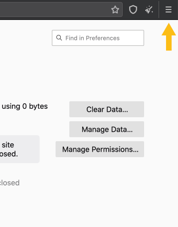

Chat with us live!
Add-ons, extensions, and plugins are components that can be added to web browsers to give them new features. Tor Browser comes with two add-ons installed: NoScript and HTTPS Everywhere. You should not install any additional add-ons on Tor Browser because that can compromise some of its privacy features.
An antivirus software is used to prevent, detect and remove malicious software. Antivirus software can interfere with Tor running on your computer. You may need to consult the documentation for your antivirus software if you do not know how to allow Tor.
A web application (web app), is an application that the client runs in a web browser. App can also refer to software that you install on mobile operating systems.
Atlas is a web application to learn about currently running Tor relays.
To determine a relay's throughput, special relays called bandwidth authorities take periodic measurements of the relays in the consensus.
Like ordinary Tor relays, bridges are run by volunteers; unlike ordinary relays, however, they are not listed publicly, so an adversary cannot identify them easily. Pluggable transports are a type of bridge that helps disguise the fact that you are using Tor.
A special-purpose relay that maintains the list of bridges.
Fingerprinting is the process of collecting information about a device or service to make educated guesses about its identity or characteristics. Unique behavior or responses can be used to identify the device or service analyzed. Tor Browser prevents fingerprinting.
A browser history is a record of requests made while using a web browser, and includes information like websites visited and when. Tor Browser deletes your browsing history after you close your session.
Captchas are a challenge-response test used in computing to determine whether the user is human or not. Tor users are often served Captchas because Tor relays make so many requests that sometimes websites have a hard time determining whether or not those requests are coming from humans or bots.
Only capitalize first letter, as Captcha is now considered a noun
Checksums are hash values of files. If you have downloaded the software without errors, the given checksum and the checksum of your downloaded file will be identical.
A path through the Tor network built by clients consisting of randomly selected nodes. The circuit begins with either a bridge or a guard. Most circuits consist of three nodes - a guard or bridge, a middle relay, and an exit. Most onion services use six hops in a circuit (with the exception of single onion services), and never an exit node. You can view your current Tor circuit by clicking on the [i] on the URL bar.
In Tor, a client is a node in the Tor network, typically running on behalf of one user, that routes application connections over a series of relays.
Compass is a web application to learn about currently running Tor relays in bulk.
In Tor terms, a single document compiled and voted on by the directory authorities once per hour, ensuring that all clients have the same information about the relays that make up the Tor network.
An HTTP cookie (also called web cookie, Internet cookie, browser cookie or simply cookie) is a small piece of data sent from a website and stored on the user's computer by the user's web browser while the user is browsing. By default, Tor Browser does not store cookies.
Cross-Site Scripting (XSS) allows an attacker to add malicious functionality or behavior to a website when they shouldn't have the ability to do so.
A cryptographic signature proves the authenticity of a message or file. It is created by the holder of the private portion of a public key cryptography key pair and can be verified by the corresponding public key. If you download software from torproject.org, you will find it as signature files (.asc). These are PGP signatures, so you can verify that the file you have downloaded is exactly the one that we intended you to get. For more information, see how you can verify signatures.
A daemon is a computer program that runs as a background process, rather than being under the direct control of a user.
Dangerzone converts any document (even pdf) to pdf, when the document is potentially dangerous or from an untrustworthy source. This is done by converting the pdf to raw pixel data and then back to pdf.
A special-purpose relay that maintains a list of currently-running relays and periodically publishes a consensus together with the other directory authorities.
The process of taking a piece of data and scrambling it into a secret code that can only be read by the intended recipient. Tor uses three layers of encryption in the Tor circuit; each relay decrypts one layer before passing the request on to the next relay.
Transmitted data which is encrypted from origin to destination is called end-to-end encrypted.
The last relay in the Tor circuit which sends traffic out onto the public Internet. The service you are connecting to (website, chat service, email provider, etc.) will see the IP address of the exit.
The ExoneraTor service maintains a database of relay IP addresses that have been part of the Tor network. It answers the question of whether there was a Tor relay running on a given IP address on a given date. This service is often useful when dealing with law enforcement.
F-Droid is a repository of FOSS (free and open source software) applications for Android. Just like in Google Play one can browse, install and keep track of updates on the device using F-Droid. Tor Browser is available on F-Droid. Follow these steps if you prefer installing the app through F-Droid.
Mozilla Firefox is a free and open-source web browser developed by the Mozilla Foundation and its subsidiary, the Mozilla Corporation. Tor Browser is built from a modified version of Firefox ESR (Extended Support Release). Firefox is available for Windows, macOS and Linux operating systems, with its mobile version available for Android and iOS.
A firewall is a network security system that monitors and controls incoming and outgoing network traffic. This traffic filter is based on predetermined rules. A firewall typically establishes a barrier between a trusted, secure internal network and another outside network but it can also be used as a content filter in the sense of censorship. Sometimes people have trouble connecting to Tor because their firewall blocks Tor connections. You can reconfigure or disable your firewall and restart Tor to test this.
Flash Player is a browser plugin for Internet applications to watch audio and video content. You should never enable Flash to run in Tor Browser as it is unsafe. Many services that use Flash also offer an HTML5 alternative, which should work in the Tor Browser.
FTE (format-transforming encryption) is a pluggable transport that disguises Tor traffic as ordinary web (HTTP) traffic.
It is a service that automatically responds to messages (Email, XMPP, Twitter) with links to the latest version of Tor Browser, hosted at a variety of locations, such as Dropbox, Google Drive and GitHub.
The Tor Project participates in the Google Summer of Code, which is a summer program for university students.
The Tor Project participates in the Google Season of Docs, which is a program for technical writers.
The first relay in the Tor circuit, unless using a bridge. When using a bridge, the bridge takes the place of the guard.
It's a icon with three horizontal lines usually on the top-left corner or top-right corner of the screen. By clicking or tapping on the icon, it reveals a menu with options or additional pages.
Reference: https://en.wikipedia.org/wiki/Hamburger_button

A cryptographic hash value is the result of a mathematical algorithm that maps data to a bit string of a fixed size. It's designed as one-way-function which means the value is easy to calculate in one direction but infeasible to invert. Hash values serve to verify the integrity of data.
Former name for "onion services", sometimes still in use in Tor documentation or communication.
In Tor terms, a "hop" refers to traffic moving between relays in a circuit.
The Hypertext Transfer Protocol (HTTP) is a channel used to send files and data between devices on a network. Originally used to transfer only web pages, it is now relied upon to deliver many forms of data and communication.
Hypertext Transfer Protocol Secure is the encrypted version of the HTTP channel used to transfer files and data between devices on a network.
HTTPS Everywhere is a Firefox, Chrome, and Opera extension that makes HTTPS the default on websites that have set up HTTPS but have not made it the default. HTTPS Everywhere is installed in Tor Browser.
An Internet service provider (ISP) is an organization that provides services for accessing and using the Internet. When using Tor Browser, your ISP cannot see what websites you're visiting.
An Internet Protocol address (IP address) is a numerical (or alpha-numeric in the case of IPv6) label assigned to each device (e.g., computer, printer) participating in a computer network that uses the Internet Protocol for communication. The IP address is the location address of the device, similar to the addresses of physical locations. Tor Browser obscures your location by making it look like your traffic is coming from an IP address that is not your own.
JavaScript is a programming language that websites use to offer interactive elements such as video, animation, audio, and status timelines. Unfortunately, JavaScript can also enable attacks on the security of the web browser, which might lead to deanonymization. The NoScript extension in Tor Browser can be used to manage JavaScript on different websites.
"little-t tor" is one way of referring to tor the network daemon, as opposed to Tor Browser or Tor Project.
These pluggable transports all make it look like you are browsing a major web site instead of using Tor. Meek-azure makes it look like you are using a Microsoft web site.
The middle position in the Tor circuit. Non-exit relays can function as either a "middle" or a "guard" for different users.
Sometimes the direct access to the Tor network is blocked by your Internet Service Provider (ISP) or by a government. Tor Browser includes some circumvention tools for getting around these blocks, including bridges, pluggable transports, and GetTor.
New Identity is a Tor Browser feature if you want to prevent your subsequent browser activity from being linkable to what you were doing before. Selecting it will close all your open tabs and windows, clear all private information such as cookies and browsing history, and use New Tor circuits for all connections. Tor Browser will warn you that all activity and downloads will be stopped, so take this into account before clicking “New Identity” (accessible through the small sparkly broom icon at the top-right of the screen). New Identity can also help if Tor Browser is having trouble connecting to a particular site, similarly to "New Tor Circuit for this Site".
This option is useful if the exit you are using is unable to connect to the website you require, or is not loading it properly. Selecting it will cause the currently active tab or window to be reloaded over a new Tor circuit. Other open tabs and windows from the same website will use the new circuit as well once they are reloaded. This option does not clear any private information or unlink your activity, nor does it affect your current connections to other websites.
Tor Browser includes an add-on called NoScript, accessed by clicking the hamburger menu ("≡") at the top-right of the screen, then navigating to "Add-ons". NoScript allows you to control the JavaScript that runs on individual web pages, or to block it entirely.
The anonymizing relay monitor (formerly arm, now nyx) is a terminal status monitor for Tor, intended for command-line usage. This is a tool for monitoring the core Tor process on a system, often useful for relay operators.
Obfs3 is a pluggable transport that makes Tor traffic look random, so that it does not look like Tor or any other protocol. Obfs3 is not supported anymore.
Obfs4 is a pluggable transport that makes Tor traffic look random like obfs3, and also prevents censors from finding bridges by Internet scanning. Obfs4 bridges are less likely to be blocked than obfs3 bridges.
A standardized Internet domain name used by onion services that end in .onion and is designed to be self-authenticating.
Can be partially or totally translated, i.e. for Spanish 'dirección cebolla' or 'dirección onion'.
An iOS app which is open source, uses Tor routing, and is developed by someone who works closely with the Tor Project. Learn more about Onion Browser
Project name. Do not translate "Onion", however you can translate "Browser". Ex: Navegador Onion.
Onion services (formerly known as “hidden services”) are services (like websites) that are only accessible through the Tor network. Onion services offer advantages over ordinary services on the non-private web, including:
An onion site is websites that is only accessible via Tor. Although similar in meaning to onion service, but, onion site refers exclusively to websites. These websites use the .onion Top Level Domain (TLD).
Onionoo is a web-based protocol to learn about currently running Tor relays and bridges. Onionoo provides the data for other applications and websites (metrics.torproject.org) which in turn present Tor network status information to humans.
The set of available onion services. For example, you can say "my site is in onionspace" instead of "my site is in the Dark Web."
OONI stands for "Open Observatory of Network Interference", it is a global observation network for detecting censorship, surveillance and traffic manipulation on the internet.
The main system software that manages computer hardware and software resources and provides common services for computer programs. The most used desktop operating systems are Windows, macOS and Linux. Android and iOS are the dominant mobile operating systems.
Orbot is a free app from The Guardian Project that empowers other apps on your device to use the internet more securely. Orbot uses Tor to encrypt your Internet traffic and hide it by bouncing through a series of computers around the world.
Orfox is no longer maintained or supported.
Tools that Tor can use to disguise the traffic it sends out. This can be useful in situations where an Internet Service Provider (ISP) or other authority is actively blocking connections to the Tor network.
The private portion of a public/private key pair. This is the key that must be kept private, and not disseminated to others.
A proxy is a middle man between a client (like a web browser) and a service (like a web server). Instead of connecting directly to the service, a client sends the message to the proxy. The proxy makes the request on behalf of the client, and passes the response back to the client. The service only communicates with and sees the proxy.
The public portion of a public/private key pair. This is the key that can be disseminated to others.
A public-key cryptography system uses pairs of mathematical keys. The public key can be disseminated widely while its corresponding private key is known only by the owner of the key pair. Any person can encrypt a message using the public key of the receiver but only the receiver in possession of the private key is able to decrypt the message. Additionally, the private key can be used to create a signature to prove the identity of the creator of a message or other files. This signature can be verified by the public key.
In public key cryptography, a public key fingerprint is a sequence of bytes that is used to identify and authenticate a corresponding longer public key.
A publicly-listed node in the Tor network that forwards traffic on behalf of clients, and that registers itself with the directory authorities.
It is an add-on for the Chrome or Chromium browsers that allows you to download several security and privacy programs, including Tor Browser, from different sources.
ScrambleSuit is similar to obfs4 but has a different set of bridges.
Element used for offering dynamic/interactive content via websites.
Secure sockets layer (SSL) is a standard Internet security protocol that is used to secure an internet connection and protect sensitive data being transmitted between two systems. SSL encrypts data that is being transferred, preventing third parties from accessing the data as it is being sent.
The specialized address format of onion addresses is self-authenticating. The format automatically guarantees that the onion address is bound to the key used to protect connections to the onion site. Ordinary internet domain names require site owners to trust and be approved by a Certificate Authority (CA) for this binding, and they are subject to hijack by the CA and typically by many other parties as well.
A device on a network that offers a service, such as file and web page storage, email or chat.
A session refers to a conversation between two devices communicating on a network. Using Tor Browser means that your session data will be wiped when you close the web browser.
A single onion service is an onion service that can be configured for services that do not require anonymity, but want to offer it for clients connecting to their service. Single onion services use only three hops in the circuit rather than the typical six hops for onion services.
Snowflake is a pluggable transport which provides censorship circumvention and access to a free and open internet. It has three components; the Snowflake client, the Snowflake proxy (the two together known as the Snowflake peers) and the broker. Snowflake can allow an open browser tab to act as an ephemeral Tor bridge. In order to prevent the blocking of proxy IP addresses, Snowflake involves a large number of volunteer proxies, which also makes them hard to pin point.
SOCKS5 is an Internet protocol used by Tor. It sends the traffic through the Tor network instead of sending it from your IP address into the open network. It is a general purpose proxy that sits at the layer 5 of the OSI model and uses the tunneling method. The applications that you run with SOCKS5 will be aware of the tunneling, but you can prevent identity correlation if set up correctly.
All in caps, as it is an acronym.
Stem is a Python (programming language) controller library for core Tor. If you want to control core Tor with python, this is for you.
The Sybil attack in computer security is an attack wherein a reputation system is subverted by creating a large number of identities, and using them to gain a disproportionately large influence in the network.
Tails is a "live" operating system, that you can start on almost any computer from a DVD, USB stick, or SD card. It aims to preserve your privacy and anonymity. Learn more about Tails.
The Guardian Project is a group of software developers, activists and designers that create easy to use, secure, opensource mobile apps and operating system enhancements. The Orbot app provided by The Guardian Project helps route other apps on your andriod device over the Tor network.
The Tor Project can refer to either The Tor Project Inc, a 501(c)3 US nonprofit responsible for maintaining the Tor software, or the Tor Project community made up of thousands of volunteers from all over the world who help create Tor.
Most websites use numerous third-party services, including advertising and analytics trackers, which collect data about your IP address, web browser, system and your browsing behavior itself, all of which can link your activity across different sites. Tor Browser prevents a lot of this activity from happening.
Tor is a program you can run on your computer that helps keep you safe on the Internet. It protects you by bouncing your communications around a distributed network of relays run by volunteers all around the world: it prevents somebody watching your Internet connection from learning what sites you visit, and it prevents the sites you visit from learning your physical location. This set of volunteer relays is called the Tor network. Sometimes the software associated with this network is called Core Tor, and sometimes "little-t tor". The way most people use Tor is with Tor Browser which is a version of Firefox that fixes many privacy issues.
Tor Browser uses the Tor network to protect your privacy and anonymity. Your internet activity, including the names and addresses of the websites you visit, will be hidden from your Internet Service Provider (ISP) and anyone watching your connection locally. The operators of the websites and services that you use, and anyone watching them, will see a connection coming from the Tor network instead of your real (IP) address, and will not know who you are unless you explicitly identify yourself. In addition, Tor Browser is designed to prevent websites from “fingerprinting” or identifying you based on your browser configuration. By default, Tor Browser does not keep any browsing history. Cookies are only valid for a single session (until Tor Browser is exited or a New Identity is requested).
Tor Browser. Sometimes also mentioned as tbb. Not 'TOR Browser'.
Do not translate "Tor", however you can translate "Browser". Example in Spanish: Navegador Tor (altering the order because is more natural like that in Spanish.) Some languages such as Arabic transliterate the word Tor, تور. That is, they write Tor with other characters.
When you run Tor Browser for the first time, you see the Tor Launcher window. It offers you the option to connect directly to the Tor network, or to configure Tor Browser for your connection. In the second case, Tor Launcher will take you through a series of configuration options.
Tor launcher is no longer used in Tor Browser since the 10.5 release.
"Tor log" is an automatically-generated list of Tor’s activity that can help diagnose problems. When something goes wrong with Tor, you may see an option with the error message to "copy Tor log to clipboard". If you don't see this option and you have Tor Browser open, you can navigate to the hamburger menu ("≡"), then click on "Preferences", and finally on "Tor" in the side bar. At the bottom of the page, next to the "View the Tor logs" text, click the button "View Logs...". You should see an option to copy the log to your clipboard, which you can then paste to a document to show whoever is helping you troubleshoot.
Tor Messenger was a cross-platform chat program that aimed to be secure by default and send all of its traffic over Tor. Tor Messenger is not in development anymore. It supported Jabber (XMPP), IRC, Google Talk, Facebook Chat, Twitter, Yahoo, and others; enabled Off-the-Record (OTR) Messaging automatically; and had an easy-to-use graphical user interface localized into multiple languages.
Tor Metrics (.onion) archives historical data about the Tor ecosystem, collects data from the public Tor network and related services, and assists in developing novel approaches to safe, privacy preserving data collection.
Tor2web is a project to let users access onion services without using the Tor Browser. NOTE: This is not as safe as connecting to the onion services via Tor Browser, and will remove all Tor-related protections the client would otherwise have.
This extension configures Thunderbird to make connections over Tor.
The core Tor configuration file.
Torsocks allows you to use many applications in a safer way with Tor. It ensures that DNS requests are handled safely and explicitly rejects any traffic other than TCP from the application you're using.
TPI is an acronym for The Tor Project, Inc.
People on IRC often use tpo to abbreviate torproject.org when writing hostnames. For example, trac.tpo is an abbreviation for trac.torproject.org.
tpo
torproject.org
trac.tpo
trac.torproject.org
Traffic is the data sent and received by clients and servers.
A web browser (commonly referred to as a browser) is a software application for retrieving, presenting, and browsing information resources on the World Wide Web. Major web browsers include Firefox, Chrome, Internet Explorer, and Safari.
A website mirror is a one-to-one copy of a website that you can find under other web addresses. A current list of torproject.org mirrors is available at https://www.torproject.org/getinvolved/mirrors.html.en.